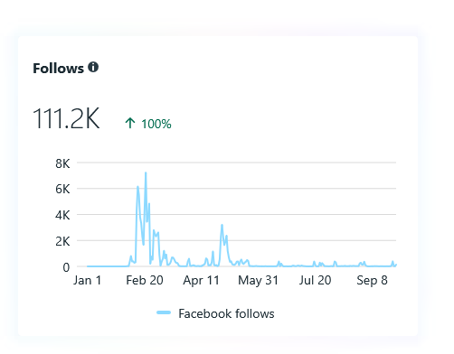
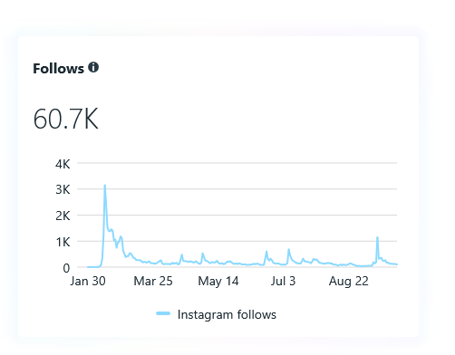
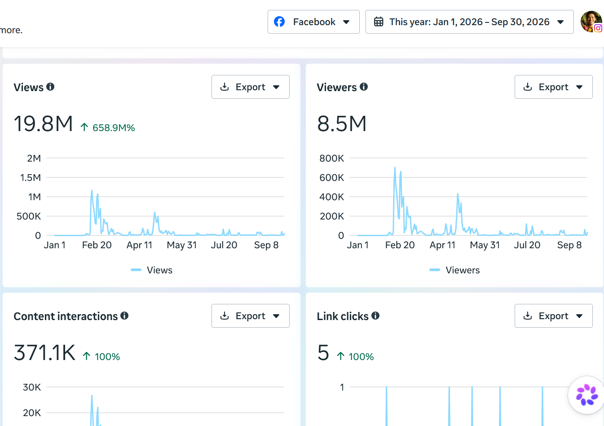
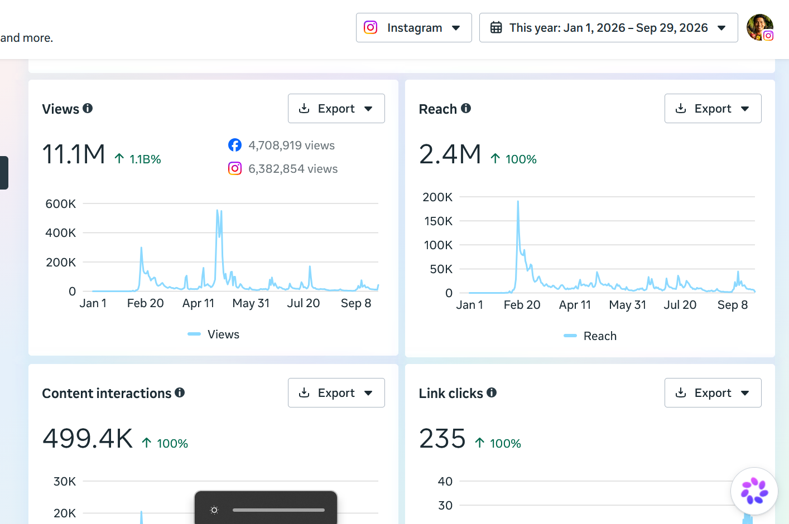
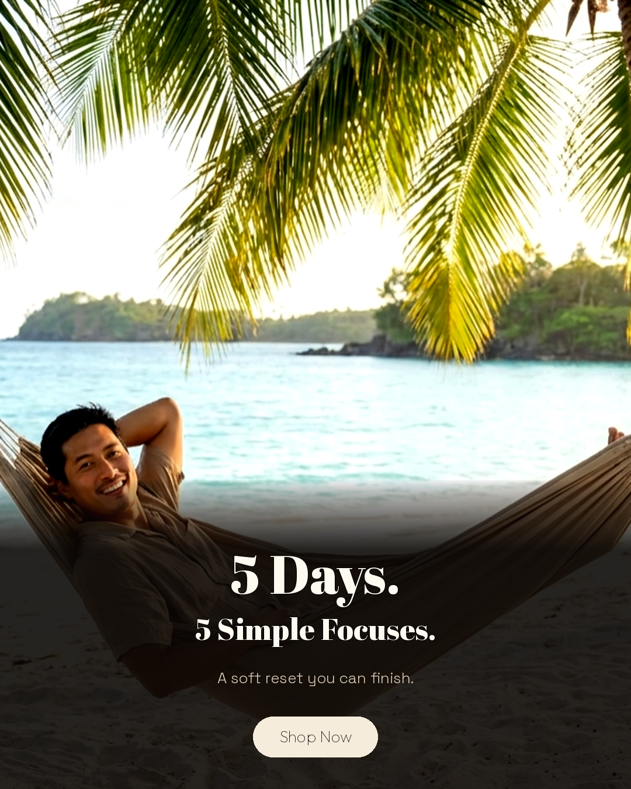
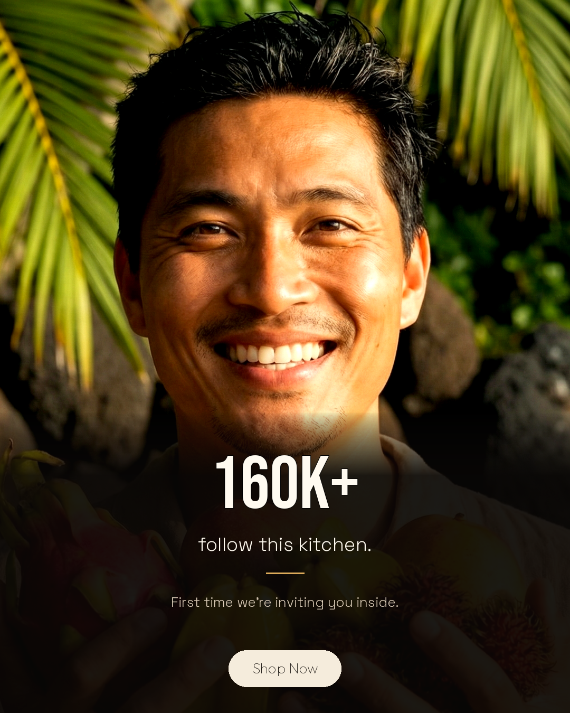
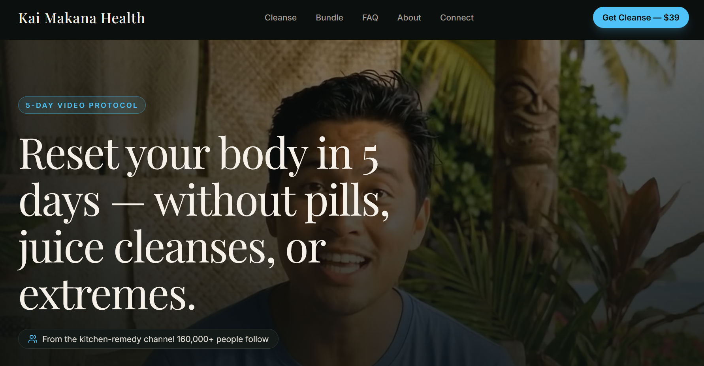
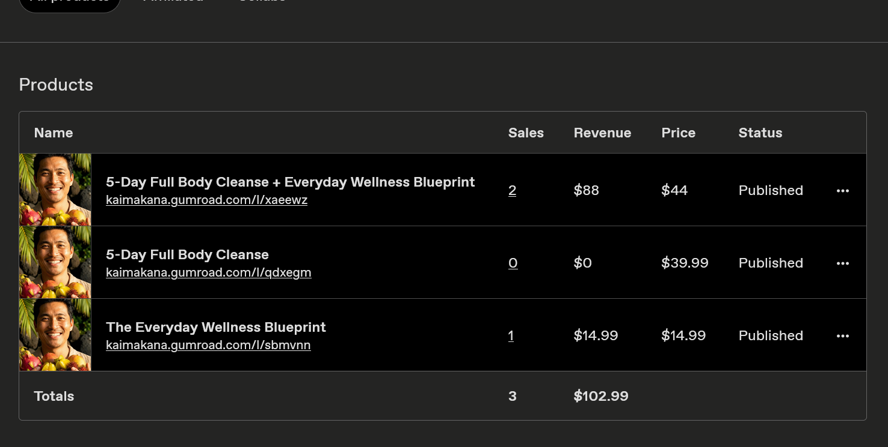

Build a real audience for a health brand from nothing — no budget, no existing following, no paid amplification.
Marketing student at UW–Whitewater, Digital Marketing & AI emphasis. I founded and operate Kai Makana Health — building the audience, the content pipeline, the landing page, the products, and the analytics behind it. Everything below is my own work, and every number is traceable to a platform export.
Building a following for a health brand from zero, with no ad budget and no existing audience to borrow from.
A wellness brand built around a single content angle: kitchen remedies. Jan 2026 – present.
Build a real audience for a health brand from nothing — no budget, no existing following, no paid amplification.




A narrow, repeatable angle beats a broad one. The posts that performed were the ones where the premise was obvious in the first second — and every time I drifted toward general wellness content, reach dropped. Constraint was the growth mechanism, not a limitation on it.
I spent $100 driving paid traffic to a $39 product. It produced zero sales — and the most useful data I have.
$100.00 total spend. Single campaign, multiple ad creatives, traffic to a product landing page.
Test whether paid traffic could convert against a $39 digital product — and learn my real cost per acquisition instead of guessing at it.


Meta reported a 6.62% click-through rate — roughly three to four times a typical benchmark — at a blended $21.49 CPM. 89.8% of everyone who clicked actually reached the landing page.
Then it stopped. 7 people started checkout. None completed.
My first three days ran at a $48.50 CPM. I had optimised for InitiateCheckout — asking Meta to find people likely to start a checkout, an event almost none of my audience reached, so the algorithm had almost no signal to learn from.
I switched the optimisation event to Landing Page Views. Within three days CPM fell to $23.64 — a 51% reduction in cost per thousand impressions — and held there. The campaign finished at $21.49 blended.
The ad was not the problem, and neither was the landing page. The campaign worked: cheap impressions, strong CTR, and almost every clicker arriving. The failure was in the last step — the purchase completed on an external checkout that introduced friction I did not control and had not tested end to end.
The most valuable thing I got from $100 was learning to instrument the whole funnel before spending, not just the top of it. A campaign that converts at the top and dies at the bottom is not a traffic problem — and I would have kept buying traffic if I had only measured clicks.
Building the storefront, pricing the offers, and instrumenting the traffic — so I could tell which channel actually sold something.
Custom landing page, three SKUs on Gumroad, and UTM-tagged traffic from a 164,000-follower audience.
Convert a large organic audience into revenue — and be able to attribute any sale to the channel that produced it.


Packaging beat product. I priced the flagship at $39.99 and assumed it would carry the line. It sold nothing — while the $44 bundle sold twice and the $14.99 entry product sold once. Every sale came through a bundle or a lower-friction entry point, and my "hero" offer was the one nobody wanted.
The second lesson was measurement. Because I had UTM-tagged the link, I could trace a sale back to Instagram link-in-bio specifically — not just "social." A small amount of tagging discipline turned an unanswerable question into a known one.
The output was never going to come from doing everything by hand — so I built production tooling.
A Python pipeline that turns batched scripts into finished, branded videos.
Publish at a volume a solo operator cannot sustain by hand — targeting roughly ten finished videos a week without sacrificing brand consistency.
The bottleneck was never ideas — it was throughput. Once one batch of scripts reliably produced six finished videos in a single run, the constraint moved from production capacity to script quality. That is the direction I want the bottleneck to move: upstream, where judgement matters, instead of downstream, where it is repetitive labour.
Audience research, positioning, content strategy and daily publishing. Built and operated a 164,000-follower audience from zero paid spend.
Meta campaign setup, creative testing, conversion-event optimisation and budget pacing. Reduced CPM by 51% by rebuilding an optimisation strategy mid-flight.
Funnel instrumentation from impression to checkout, UTM tagging, and platform analytics. Comfortable reading a number and deciding what it means for the next decision.
Ship actual product — landing pages, storefronts, and web apps. Comfortable with Python, Next.js, TypeScript, Tailwind, and Supabase.
Long-form landing page copy, ad creative, product naming and offer framing — all written against a specific conversion goal.
Use AI as production infrastructure, not a novelty — inside a repeatable pipeline with a defined output and quality bar.